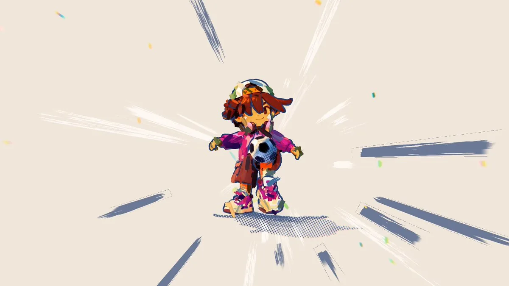

Max Vedel（@mxvdl）做了一个可以在浏览器里打开的颠球实验室，名叫 Paris Freestyle，站点副题是「brush-stroke juggling lab」（画笔描边的颠球实验室）。他说这是用 Claude Fable 5.2 写成的：一个可以完全自定义的 three.js 动画，让人在风格化的巴黎街上按节拍颠球，最好开着声音看。页里可以换画幅、暂停、跳到另一条街，也可以改设置、把设定存成 JSON，或直接导出 MP4。2026-11-12 凌晨，three.js 官方账号 @threejs 发了一颗足球表情，附上同一条演示链接和同一段视频。本页以这件作品为中心，收录作者本人帖文的全文；视频只有封面静帧，没有下载，也没有观看。

这是一件什么作品
就作者自己的说法，这是他用 Fable 5.2 做成的、可以完全自定义的 three.js 动画：在风格化的巴黎街上按节拍颠球，带一层「很好的笔触着色器」；这版构建里，唯一的图片是角色的贴图。这些归属是自报。本页打开过演示的公开首页和它所引用的脚本，但没有在浏览器里把演示玩起来，也没有观看约 53 秒的附件视频，因此不能证明整段表演是谁写的，也不能代替亲眼看一遍笔触和声音。⚠️
从公开页面可以确认的，是它的技术外形。标题就是 Paris Freestyle — brush-stroke juggling lab。顶栏可以跳到不同的街，并在 9:16、4:5、1:1、16:9 四种画幅之间切换；下方有暂停、重来、声音开关，以及「Export MP4」。设置面板里可以改节奏、每条街的拍数、镜头、角色比例与上色、笔触疏密、环境声音，也可以把当前设定复制为 JSON 再载入。脚本里能读到四条街的名称：Boulevard · golden hour（林荫大道 · 金色时分）、Montmartre · dusk（蒙马特 · 黄昏）、Quais de Seine · afternoon（塞纳河岸 · 午后）、Pigalle · night（皮加勒 · 夜晚）。默认节奏是每分钟 144 拍，每条街 16 拍。页面提示需要 WebGL 2。
公开首页引用了三个第三方库文件：three.js（文件头写修订号 147）、lil-gui 0.19.2，以及用于在页内封装 MP4 的 mp4-muxer。另外还有一份角色脚本和一份主程序。首页 HTML 里没有单独的图片标签或仓库链接；根路径下的 LICENSE、README 均为 404。
作者怎么说
以下为作者英文长帖与本人续帖的中文译文。主帖是 X 长文，短链指向这段视频，试用地址写在约五分钟后的续帖里。
Fable 5.2 一发布我就停不下来地玩，可以说没有哪个模型像它这样让我眼前一亮：在这里，你可以在风格化的巴黎街上按节拍颠球。（最好开着声音，试用链接在下面）
这是我做的、可以完全自定义的 @threejs 动画，里面有一层很好的笔触着色器。这版构建里，唯一的图片是角色的贴图。这个工作流做动画的潜力很大。
作者：Max Vedel @mxvdl；发布：2026-11-11 21:13（新加坡时间，UTC+8）。原帖附视频，点击观看。
来试试，也可以自己调：
查看这条续帖。约十一分钟后，他又回自己一条，并提到 @claudeai：「Fable 5.2 太猛了 😎」。查看这条回复。
英文原文
Been playing non stop with Fable 5.2 since it's release and I can say no other model has blown my mind like this one : Here, juggle in rythm in the stylized streets of paris. (Best with sound, link to try below)
This is fully customizable @threejs animation I created, with an awesome brush stroke shader. The only image in this build is the texture for the player. So many potential for animation with this workflow.
Try the experience and tweak stuff:
https://parisfreestyle.netlify.app
Fable 5.2 is insane 😎
three.js 官方账号的引介
2026-11-12 02:02（新加坡时间，UTC+8），three.js 官方账号 @threejs 发帖介绍这个演示。帖文不是引用转发，而是直接附上了 Max 原帖里的同一条视频，并给出演示地址。正文只有一颗足球表情。
⚽
查看这条引介。用户投递的是这一条。按页面安排，作品仍以 Max Vedel 的《Paris Freestyle》为中心。评论区里有人问提示词，也有人希望公开做法好让自己的智能体做出别的设计；到本页核对时，作者没有在可检索的回复里回答这两问。另有人提到从 Boulevard 跳到 Pigalle 时，暂停状态会保持——这两条街名可以在页面脚本里核到，暂停是否跨街保持，本页没有实际操作，不能替他确认。⚠️
许可与可复现性
演示可以公开打开，但作品本身没有开放许可证。首页 HTML 有一条版权注释：「(c) 2026 Max Vedel / Spellbound Labs. All rights reserved.」主程序文件开头写得更明确：保留所有权利，未经书面许可，不得复制、再利用或再分发这份代码及其着色器。2026-11-12 在站点根路径检查 LICENSE、LICENSE.md、LICENSE.txt 与 README，均为 404；也没有看到 GitHub 链接。作者没有在可见回复里给出源码仓库。
页面里附带的 three.js r147，其上游 r147 的 LICENSE 于 2026-11-12 经 raw.githubusercontent.com 现场核对为 MIT License（Copyright © 2010-2022 three.js authors）；当时 dev 分支的 LICENSE 仍是 MIT，年份已写到 2010-2026。lil-gui 0.19.2 的文件头同样标明 MIT。这些只说明引擎和控件库本身的许可，不能外推到这件作品，也不能外推到笔触着色器。按版权分级，本页只做导读，并收录作者本人帖文的全文中译；不转载视频，不转载角色贴图，也不引述着色器源码。
传播数据（快照）
2026-11-12 经 X 接口读取时，Max 的原帖约 8315 次浏览、45 个赞、3 次转发、10 条回复、54 次收藏，引用 2 次；视频播放次数当时约 4095。@threejs 的引介帖约 7474 次浏览、150 个赞、6 次转发、5 条回复、75 次收藏。这些数字会变，只作当时记录，不是效果评测。
核实边界与署名
- 这是以《Paris Freestyle》为中心的导读。用户发来的是 @threejs 的引介帖；作品与视频的作者是 Max Vedel @mxvdl。
- 「Fable 5.2 写成」「很好的笔触着色器」「这版构建里唯一的图片是角色贴图」均为作者自报。公开脚本里可以见到一个名为 BRUSH、版本号 1.0.0 的模块，以及角色脚本中有一处嵌入的
data:image/webp；本页没有在浏览器里运行演示，也没有解码或转载那张贴图，因此不能把自报写成已经逐项核完的结论。⚠️ - 四条街的名称、默认 144 BPM / 每街 16 拍、画幅选项、导出 MP4 与 JSON 设定、以及需要 WebGL 2，来自 2026-11-12 打开的公开首页和它所引用的脚本，可以核对。本页没有把四条街都播放完，也没有导出视频。
- ⚠️ 未下载或观看约 53 秒的附件视频。封面帧只代表其中一帧，不能代替完整演示，也不能证明笔触或声音的效果。
- 作者简介所写「巴黎」「SwipeBack 联合创始人兼创意总监」，以及版权行里的 Spellbound Labs，均为资料或页面上的自称，未独立核实。⚠️